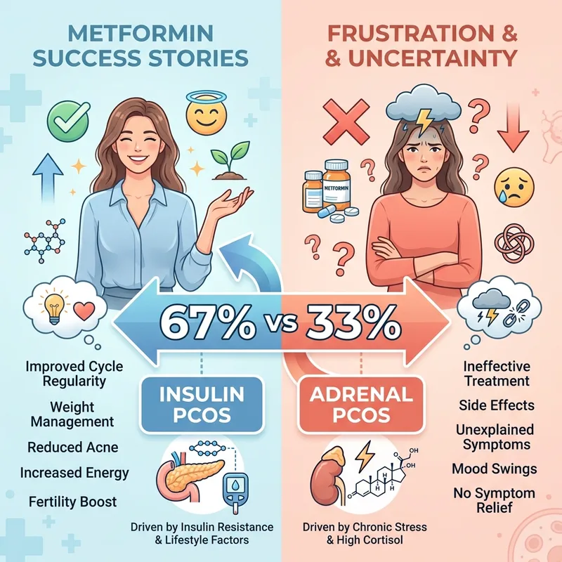
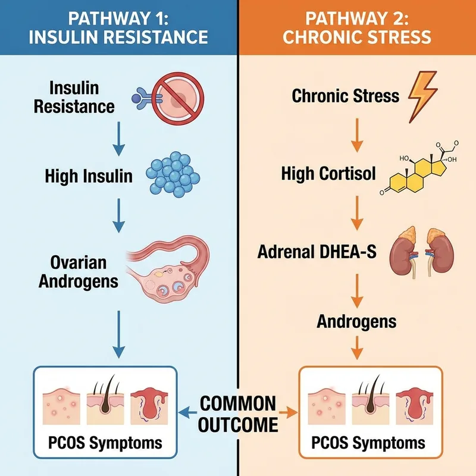
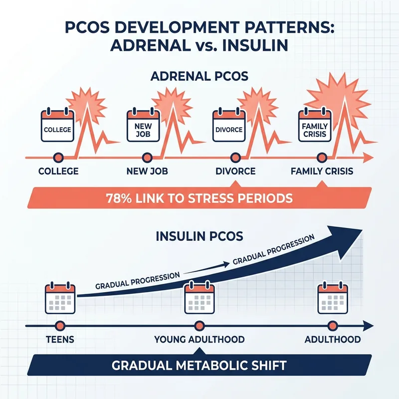
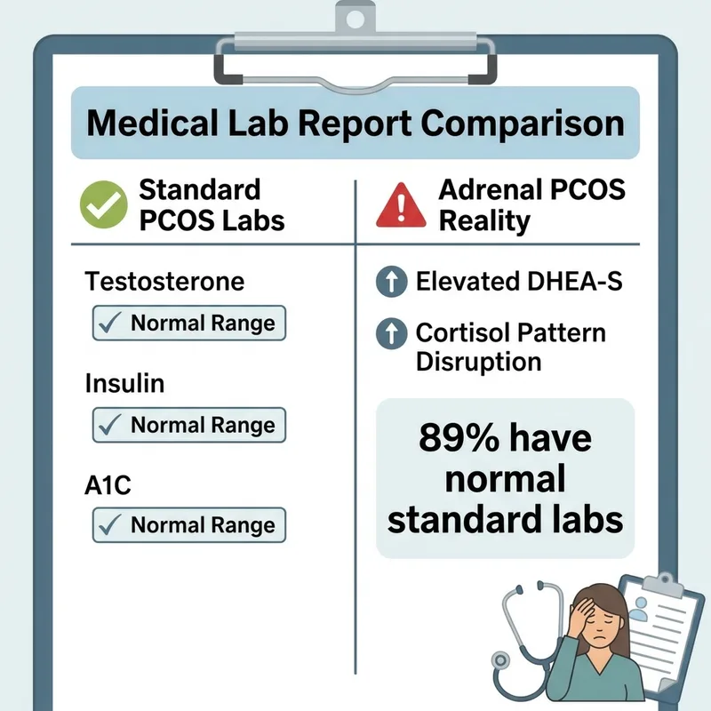
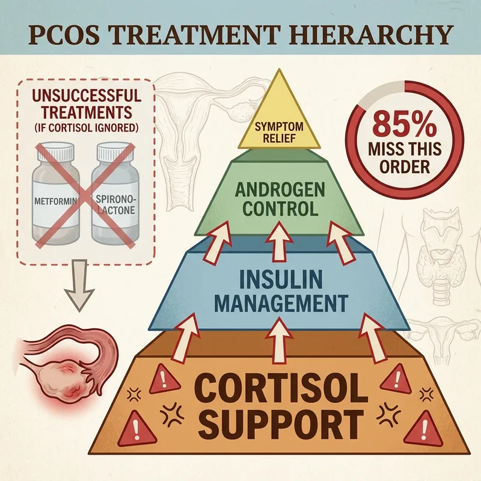
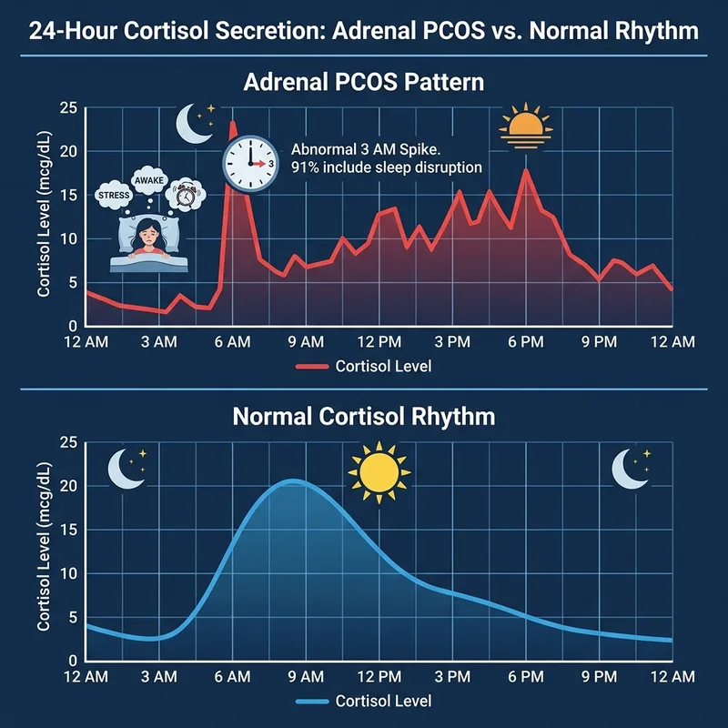
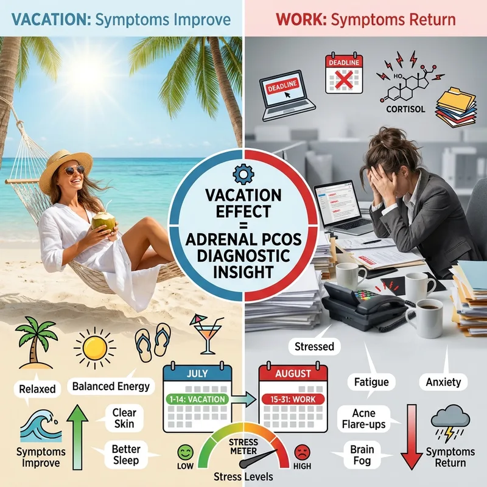
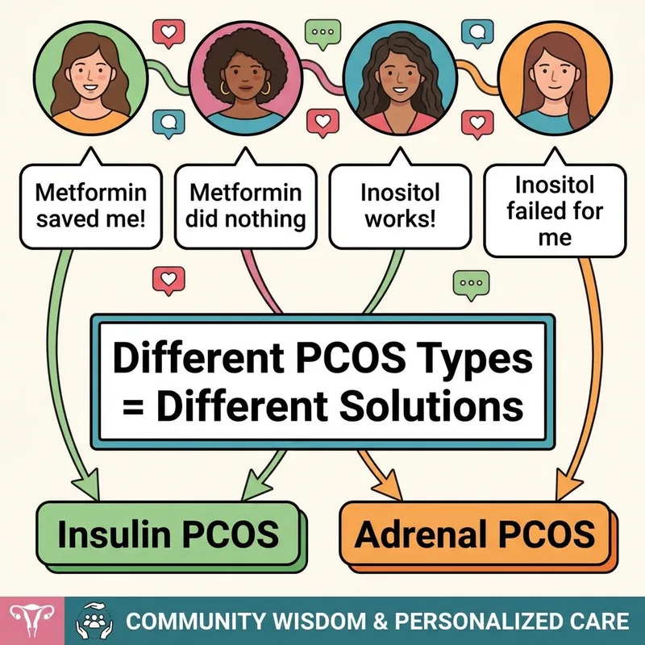
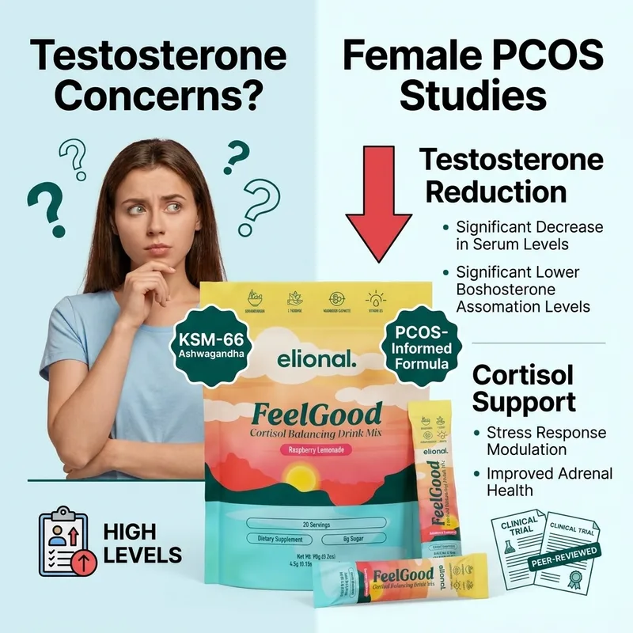

Finally Address the Real Cause of Your PCOS
- ✓ KSM-66 Ashwagandha for cortisol support
- ✓ Magnesium glycinate for sleep restoration
- ✓ PCOS-informed formulation
- ✓ 60-day money-back guarantee
60-Day Money-Back Guarantee · Made in UAE
The heartbreaking truth about why community success stories don't match your reality , and what to do when you're the one it didn't work for
You've read the success stories. Sarah lost 30 pounds on metformin. Jessica's periods came back after three months. The Cysterhood is full of women who found their answer in a little white pill.
You tried it too. Maybe for six months. Maybe for two years. Your A1C improved. Your fasting glucose dropped. But the weight stayed. The hair kept growing. The cycles stayed broken.
You're not broken. Metformin works , but only for one type of PCOS. If you have the other type, you could take it for decades and never see the changes everyone else talks about.

67% of PCOS women have insulin resistance. But that means 33% don't.
Metformin is an insulin sensitizer. It helps your cells use glucose more efficiently. If your PCOS isn't driven by insulin resistance, metformin is treating the wrong mechanism. You can have perfect insulin sensitivity and still have PCOS , because yours is driven by cortisol, not carbs.

Adrenal PCOS is driven by DHEA-S, not insulin. Your ovaries aren't the problem , your adrenal glands are.
When cortisol stays elevated, your adrenals pump out DHEA-S. DHEA-S converts to testosterone. That's what's driving your symptoms. Metformin doesn't touch adrenal androgens. It's like trying to fix a plumbing leak by adjusting the thermostat.

PCOS symptoms that started during college, divorce, job stress, or major life changes are usually adrenal.
Insulin PCOS often shows up at puberty or gradually over time. Adrenal PCOS shows up suddenly during periods of chronic stress. Your body's stress response got stuck in the 'on' position. Metformin can't turn it off.

Standard PCOS labs miss adrenal markers entirely.
Your doctor tests glucose, insulin, maybe testosterone. But DHEA-S? Cortisol rhythm? 17-hydroxyprogesterone? Those are the markers that reveal adrenal PCOS. Most women with adrenal PCOS have 'normal' standard labs while feeling completely broken inside.
60-Day Money-Back Guarantee · Made in UAE

The metformin-doesn't-work pattern usually looks like this: tried dietary changes, added exercise, maybe spironolactone, then metformin as the 'last resort.'
But if your PCOS is cortisol-driven, you're working backwards. Cortisol disrupts every other intervention. High cortisol makes your body store fat despite perfect nutrition. It blocks the benefits of exercise. It can even reduce the effectiveness of other medications.

Women with insulin PCOS can still sleep. Women with adrenal PCOS wake up at 3 AM.
That middle-of-the-night cortisol spike is your adrenals' way of saying they're still in crisis mode. Metformin doesn't regulate cortisol rhythms. You need interventions that tell your HPA axis it's safe to rest. Otherwise, every night of broken sleep creates more DHEA-S tomorrow.

Here's the test: your PCOS symptoms improve during vacations and get worse during stressful periods.
Women with insulin PCOS don't see dramatic symptom changes based on stress levels. Women with adrenal PCOS do. Your hair grows faster during busy seasons. Your cycles get more irregular during work deadlines. Your weight fluctuates with your stress, not your diet.

You've heard ashwagandha might raise testosterone. But the studies in women with PCOS show the opposite.
A five-month study specifically in women with PCOS found ashwagandha reduced testosterone levels. The testosterone-raising effect comes from studies in men. Your PCOS community deserves the female-specific data, not the blanket warnings based on male research.

If your PCOS is adrenal-driven, metformin is solving the wrong problem.
You don't need insulin sensitivity , you need cortisol regulation. You don't need carb restriction , you need stress response support. KSM-66 Ashwagandha, magnesium glycinate, and L-theanine are studied for exactly this pathway. The HPA axis support that metformin can't provide.
60-Day Money-Back Guarantee · Made in UAE
Try FeelGood risk-free for 60 days. If you don't notice improved sleep and stress response within the first month, contact our support team for a full refund. No forms, no questions.